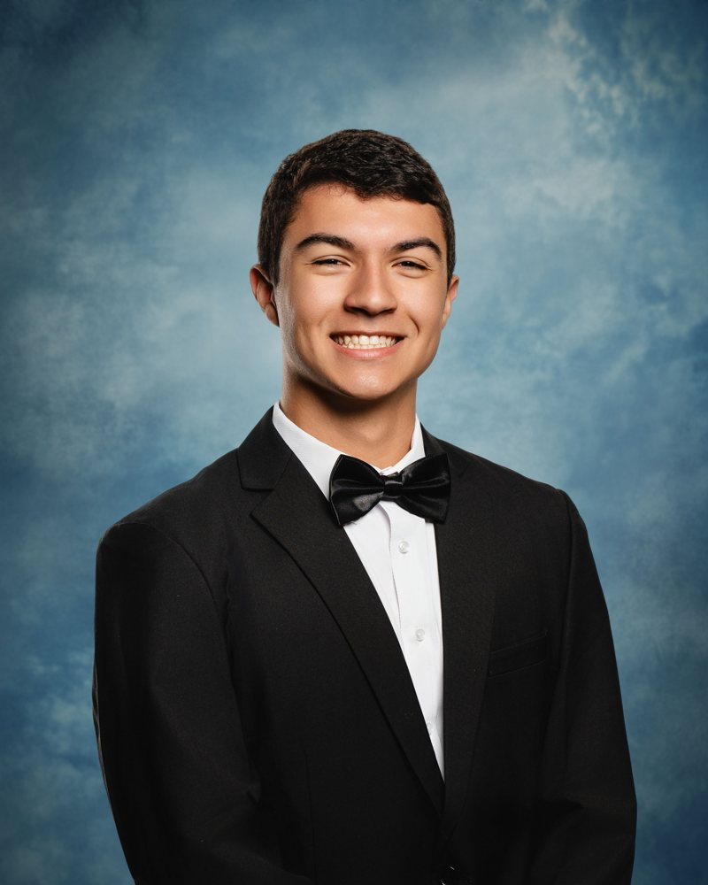
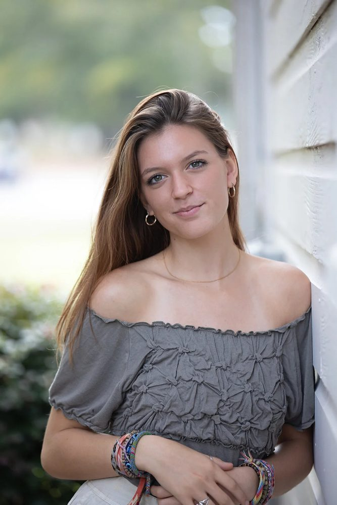
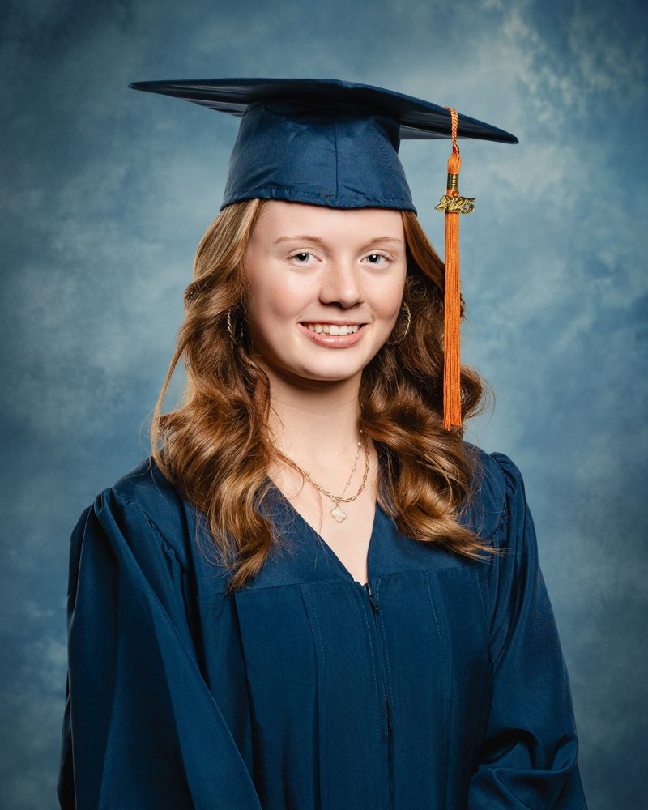
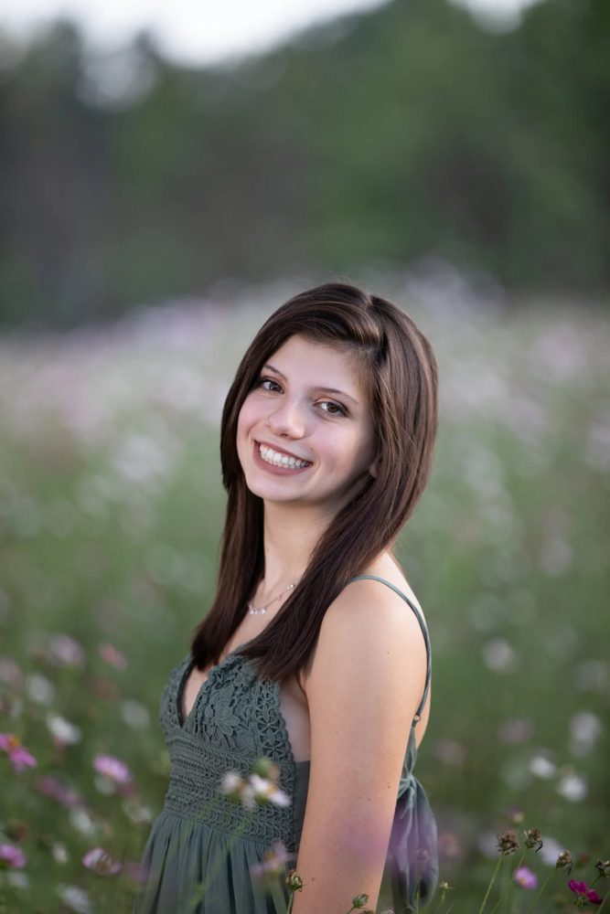
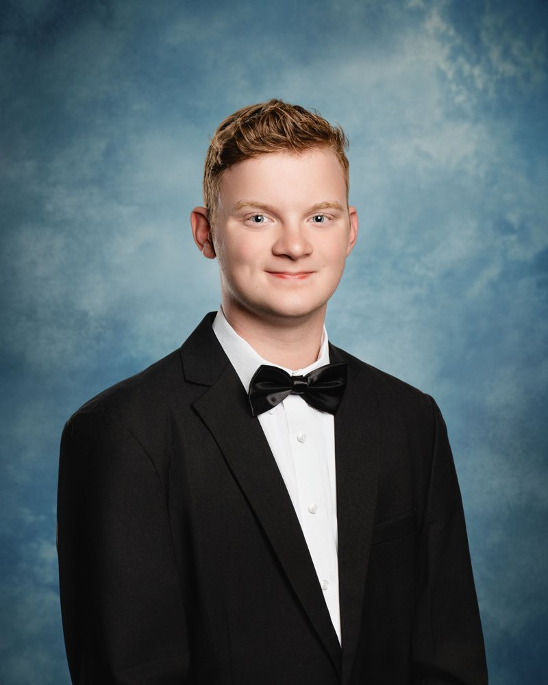
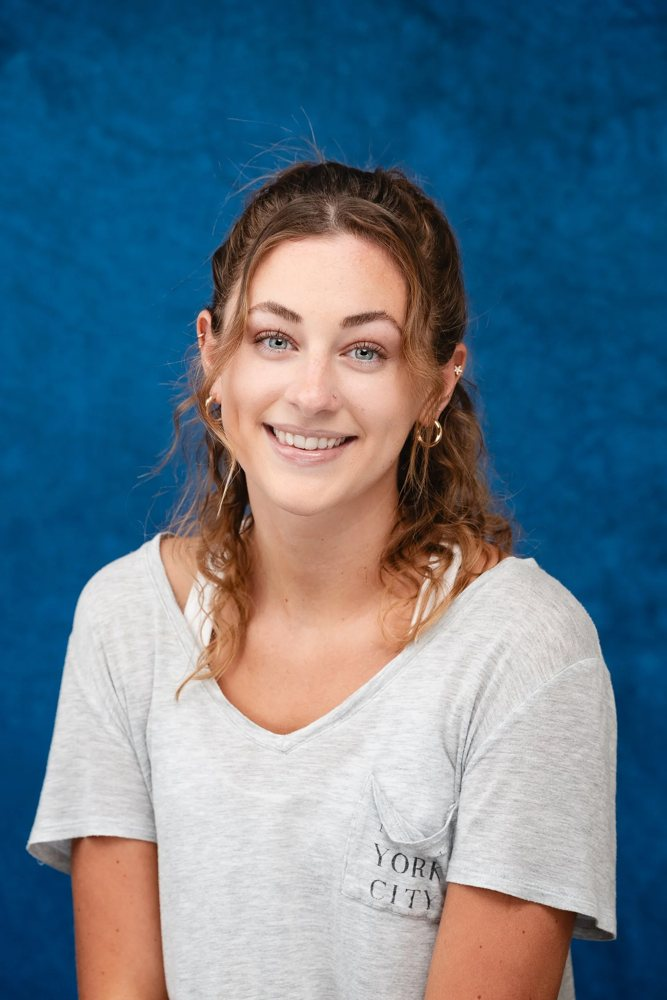

For seniors & their families
What is a traditional senior portrait?
It's the classic yearbook portrait: a simple, timeless head-and-shoulders photo that looks just as good in 30 years as it does today.
Traditionally, young women wear a soft fabric drape wrapped across the shoulders. young men wear a tuxedo-style top. The background is clean and plain, so the focus stays on your senior's face. It's the portrait many families frame, send with graduation announcements, and use in the yearbook.
Each session is a relaxed 15 minutes. Nathan guides posture, chin and expression, and takes a few variations so there are good choices. We provide the drape.

Selected work
Senior portraits by Nathan
A few favorites from recent seniors: studio, cap & gown, and on-location sessions. Picture day at CVA is the classic tux & drape portrait.



On the day
What to expect
- Book your timePick the senior link or the underclass link below before Monday, Oct 19. Seniors choose a 15-minute session and pay the $25 sitting fee at booking.
- Arrive a few minutes earlyCome to 4511 Weddington Rd, Concord, ready to go, with hair done the way you like it.
- We do the restSeniors are dressed in the drape we provide, then Nathan poses and coaches every shot. Underclass pictures are quick and easy.
Preparing
What to wear
Seniors: we provide the drape.
[Nathan to confirm: what to wear under the tux/drape]
Underclass: wear something you feel good in. Solid colors photograph best; skip large logos and busy patterns.
Everyone: neat hair, a quick look in the mirror, and your best smile.
Schedule
Wednesday, October 21

Seniors
Traditional tux & drape portraits. 15-minute sessions. $25 sitting fee paid at booking.
Book a Senior Session
Underclass
Picture day for all non-senior students.
Book Underclass Picture DayQuestions
FAQ
Which link should I use?
Seniors use the senior session link for the traditional tux & drape portrait. All other students use the underclass picture day link.
What is the $25 fee?
Senior sessions have a $25 sitting fee, paid when you book. It reserves your 15-minute session.
How long is a session?
Senior sessions are 15 minutes. Underclass pictures are quick, between 12:30 and 2 PM.
What's provided?
We provide the drape for senior portraits, plus all lighting, backdrop and posing guidance.
When is the deadline?
Sign-ups close Monday, October 19. Picture day is Wednesday, October 21.
Will there be cap & gown portraits?
Yes. Cap & gown portraits are planned for the spring. Details will come later.
How do I reach Nathan?
Email nathan@nathanbinglephotography.com or call/text (704) 558-6566.